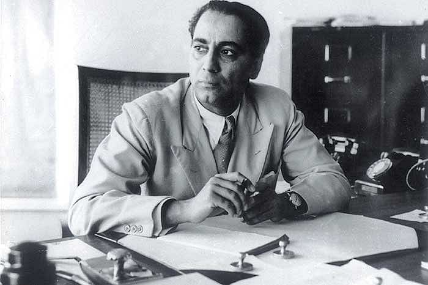
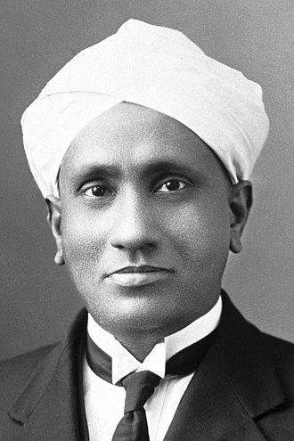
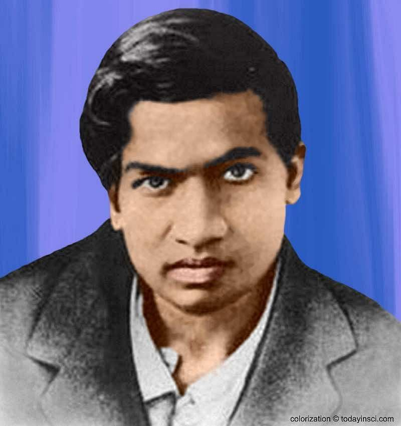

INDIAN SCIENTISTS |
|---|
| Sno |
Scientist Name |
Image |
Inventions |
Reference Links |
| 1. |
APJ Abdul Kalam |
 |
- Headed the developing of India's first Satellite Launch Vehicle(SLV).
- Played crucial role in development of India's missile and nuclear weapons.
- Known as Missile Man of India.
- Served a the President of India.
|
https://en.wikipedia.org/wiki/A._P._J._Abdul_Kalam |
| 2. |
Homi Jehangir Bhabha |
 |
- Born on October 30, 1909 in Bombay, Homi J Bhabha played an important role in the Quantum Theory.
- He was the first person to become the Chairman of the Atomic Energy Commission of India.
- Bhabha is generally acknowledged as the father of Indian nuclear power.
|
https://en.wikipedia.org/wiki/Homi_J._Bhabha |
| 3. |
CV Raman |
 |
- Chandrasekhara Venkata Raman won the Nobel Prize for his work on scattering of light.
- He was the first to investigate the harmonic nature of the sound of the Indian drums such as the tabla and the mridangam.
- He discovered that, when light traverses a transparent material, some of the deflected light changes in wavelength(Raman Effect).
|
https://en.wikipedia.org/wiki/C._V._Raman |
| 4. |
Srinivasa Ramanujan |
 |
- Born on December 22, 1887 in Tamil Nadu, Ramanujam was an Indian mathematician.
- He completely mastered this book by the age of 13 and discovered sophisticated theorems on his own.
- Ramanujan proposed an abundance of formulae that could be investigated later in depth.
|
https://en.wikipedia.org/wiki/Srinivasa_Ramanujan |